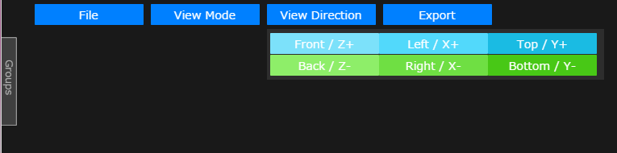
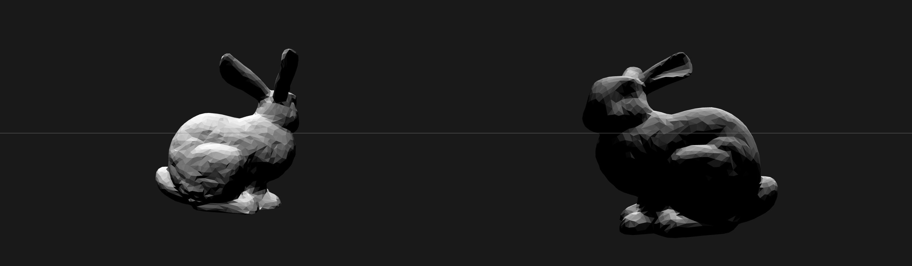
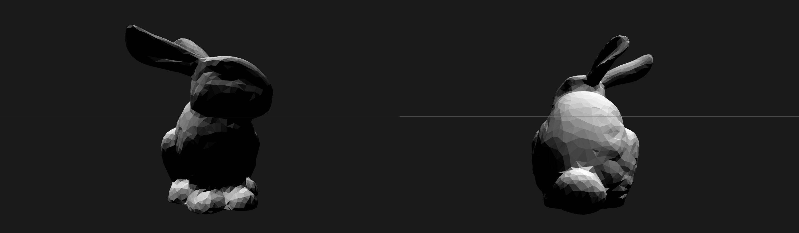
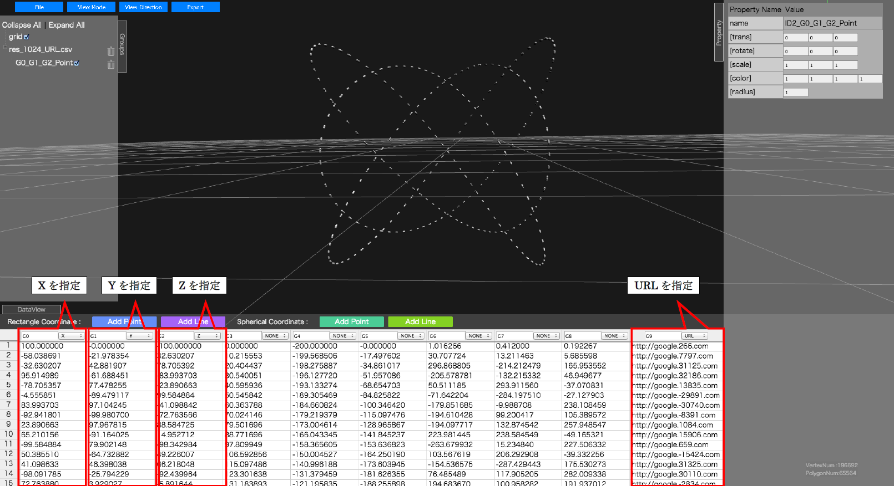
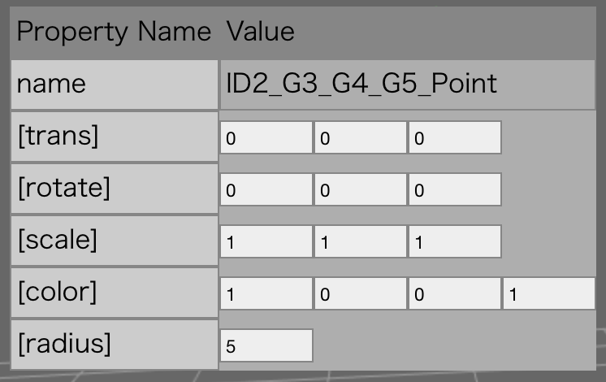

本書は設計解探査システムのプロトタイプ(以降, WebGL View)の操作方法について解説するものです.
WebGL View は以下の環境で動作します.
OS : Linux, Windows(Vista,7,8), MacOSX
Webブラウザ: Mozilla Firefox, Google Chrome, Apple Safari
WebGL View の主な機能は以下の通りです.
WebGL View の動作には Node.js のインストールが必要です.
Node.js の公式サイト http://nodejs.org から Node.js 本体をダウンロードし, インストールします.
インストールCD からXXXXX.zipをローカルディスクにコピーし, 展開します.
Webブラウザで index.html ファイルを開きます.
(1) terminal から以下のコマンドを実行します. ただし, nodeにpathが通っている必要があります.
(2) ブラウザにて, localhostにアクセスします. URLは通常は以下のようになります.
WebGL View の画面構成は下記のとおりです.
各種ファイルをロードすることができます.
プルダウン時に表示されるボタンの動作は以下のとおりです.

View画面の透視投影, 平行投影を切り替えることができます.

指定された軸(プレフィクスビュー)にてView画面を切り替えることができます.
プルダウン時に表示されるボタンの動作は下記のとおりです.
| ボタン | 動作 |
|---|---|
| Front / Z+ | Z軸+方向からのビューに切り替えます. |
| Left / X+ | X軸+方向からのビューに切り替えます. |
| Top / Y+ | Y軸+方向からのビューに切り替えます. |
| Back / Z- | Z軸-方向からのビューに切り替えます. |
| Right / X- | X軸-方向からのビューに切り替えます. |
| Bottom / Y- | Y軸+方向からのビューに切り替えます. |




現在可視化されているカメラアングル、オブジェクトを、HIVEにてレンダリングできる形式でExportします. 押下すると、.scn(シーンファイル)をダウンロードすることができます.

可視化された2D, 3Dオブジェクトを表示する画面です.
グリッドのサイズは3D空間上の単位で100 (固定) です。また, マウス操作にてオブジェクトのビューの操作を行うことができます.
マウス操作方法を以下に示します.
| マウス | ビュー |
|---|---|
| 左クリックドラッグ | 回転(原点) |
| 右クリックドラッグ | 移動 |
| 中クリックドラッグ | ズーム |
| 中ホイール | ズーム |

Groupsウィンドウは, ロード, 追加されたオブジェクトの管理を行います.
対象のデータは以下のとおりです.
操作方法を以下に示します.

読み込んだテキストデータを表示し, 可視化対象の列成分の選択を行います.
G0, G1と記載された箇所は,列の名前を表します.
デフォルト名は G0, G1...Gn です.
名前は変更することができ, かつ名前は重複可能です.
列選択を行うには, NONEと記載されたプルダウンメニューを使用します.
プルダウンにて表示される値の意味は下記のとおりです.
同じ可視化内容を重複して選択した場合は, 左側の列が優先されます.

選択したテキストデータのPointモデルで、直交座標での可視化を行います.
テキストデータのLineモデルで、直交座標での可視化を行います.
Lineモデルは現状は離散線分形式となります.
選択したテキストデータのPointモデルで、球座標系での可視化を行います.
テキストデータのLineモデルで、、球座標系での可視化を行います.
Lineモデルは現状は離散線分形式となります.

凡例を以下に示します.


Add Pointで生成されたデータは, マウス操作 (左クリック) にてピックすることができます.
ピックした凡例を以下に示します.

Groupsウィンドウで選択したオブジェクトのプロパティを表示します.

設定可能なプロパティは下記のとおりです.
オブジェクトの名前を表します.
左からX方向移動, Y方向移動, Z方向移動を表します.
デフォルト値は (0, 0, 0), 単位は3DView空間座標に依存します.
左からX軸中心回転, Y軸中心回転, Z軸中心回転を表します.
デフォルト値は (0, 0, 0), 単位はradianです.
左からX方向スケール, Y方向スケール, Z方向スケールを表します.
デフォルト値は (1, 1, 1) です.
左からR, G, B, A成分を表します.
デフォルト値は (1, 1, 1, 1) です.

非STLデータの場合のみ設定可能です.
デフォルト値は 1.0, 単位は3DView空間座標に依存します.